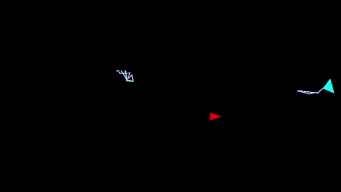
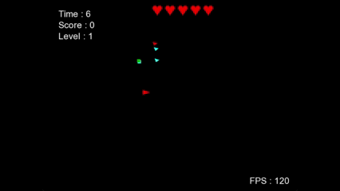
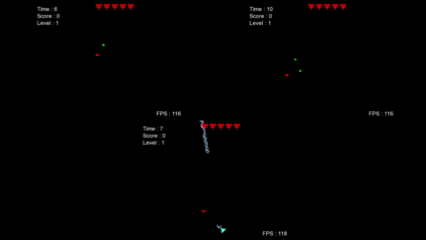

<!DOCTYPE hmtl>
<hmtl lang="fr">
    <head>
        <meta charset="UTF-8">
        <script src="../../js/Paths.js"></script>
    </head>

    <body>
        <site-header></site-header>

        <main>
            <div class="head-page">
                <h1>Color Survivor</h1>
                <h3>2026 - SFML C++ - PC - Arena SHMUP - Groupe (3) - 2 semaines</h3>
                <h1>Game programmer</h1>
            </div>

            <div class="main-content">

                <!-- Context -->
                <div class="text-div">
                    <h1>Contexte</h1>
                    <p>
                        Dans le cadre d'un cours à l'<strong>IIM Digital School</strong>, nous devions faire un jeu du type <strong>Arena Shoot Them Up</strong>. 
                        <br>
                        Ce jeu devait être réalisé en <strong>C++</strong> uniquement à l'aide de la bibliothèque <strong>SFML</strong> et uniquement avec des formes simples.
                        <br><br> 
                        Nous étions en groupe de 3 Game Programmers.
                    </p>
                </div>

                <div class="divider"></div>

                <!-- Pitch -->
                <div class="text-div">
                    <h1>Pitch</h1>
                    <p>
                        Le but est de <strong>survivre</strong> le plus longtemps possible. 
                        Pour détruire les <strong>ennemis</strong>, il faut être de la <strong>même couleur qu'eux</strong>.
                    </p>
                </div>

                <div class="divider"></div>
                
                <!-- Walkthrough -->
                <div>
                    <h1>Walkthrough</h1>
                    <video controls autoplay loop muted playsinline>
                        <source src="../../Assets/Projects/School/2026/ColorSurvivor/Walkthrough.mp4" type="video/mp4">
                    </video>
                </div>

                <div class="divider"></div>

                <div class="my-works">
                    <h1>Mon travail</h1>

                    <!-- Lightnings -->
                    <div class="preview">
                        
                        <div class="preview-text">
                            <h3>Éclairs</h3>
                            <p>
                                J'ai fait un effet <strong>d'éclairs</strong>, que j'avais initialement réalisé sous <strong>Godot</strong> en <strong>C#</strong> 
                                pour mon jeu <a href="../ISARTDigital/Sokovolt.html">SokoVolt</a>. J'ai donc dû <strong>traduire</strong> le code et faire l'<strong>affichage</strong> à la main. 
                                <br><br>
                                Pour de l'optimisation, la boîte de <strong>collisions</strong> des éclairs est un seul <strong>grand rectangle</strong>.
                        </div>
                    </div>

                    <div class="divider"></div>

                    <!-- Pool system -->
                    <div class="preview">
                        
                        <div class="preview-text">
                            <h3>Pool System</h3>
                            <p>
                                Afin de gagner des <strong>performances</strong> et éviter <strong>d'instancier</strong> et de <strong>supprimer</strong> 
                                énormément de balles et ennemis très <strong>régulièrement</strong>, j'ai intégré un <strong>système de pooling</strong>.
                                <br><br>
                                Les éléments qui l'utilisent sont les <strong>éclairs</strong>, les <strong>ennemis</strong> et surtout les <strong>balles</strong>.
                        </div>
                    </div>

                    <div class="divider"></div>

                    <!-- Movements -->
                    <div class="preview">
                        
                        <div class="preview-text">
                            <h3>Movements</h3>
                            <p>
                                Je me suis occupé de faire les <strong>mouvements</strong> du <strong>joueur</strong> et des <strong>ennemis</strong>. 
                                Pour avoir un <strong>meilleur ressenti</strong>, j'ai fait des <strong>calculs de friction</strong>. 
                                Si on change <strong>légèrement</strong> de <strong>direction</strong>, on ne sent <strong>pas beaucoup de différence</strong>, 
                                alors que si on fait <strong>demi tour</strong>, on ressent le <strong>freinage</strong> nécessaire avant de repartir.
                            </p>
                        </div>
                    </div>

                    <div class="divider"></div>

                    <!-- Architecture -->
                    <div class="preview">
                        
                        <div class="preview-text">
                            <h3>Architecture</h3>
                            <p>
                                Au début du projet, je me suis occupé de faire <strong>l'architecture</strong> des <strong>classes</strong>, 
                                principalement de l'<strong>héritage</strong>, ce qui a permis pour la plupart des <strong>systèmes</strong> d'avoir 
                                une <strong>seule liste</strong> du type <strong>GameObject</strong> au lieu d'une liste par classe.
                            </p>
                        </div>
                    </div>

                    <div class="divider"></div>

                    <!-- Ennemies -->
                    <div class="preview">
                        
                        <div class="preview-text">
                            <h3>Les ennemies</h3>
                            <p>
                                J'ai fait le comportement de nos 3 types d'ennemis :
                                <br><br>
                                Les <strong>corps-à-corps</strong>, qui <strong>suivent</strong> le joueur et essaient de le toucher;
                                <br><br>
                                Les <strong>tireurs</strong>, qui <strong>tournent</strong> autour du joueur et <strong>tirent</strong> des balles;
                                <br><br>
                                Et les <strong>tourelles</strong>, elles ne bougent pas mais tirent de long <strong>éclairs</strong>.
                            </p>
                        </div>
                    </div>

                    <div class="divider"></div>

                    <!-- Colisions -->
                    <div class="preview">
                        
                        <div class="preview-text">
                            <h3>Les collisions</h3>
                            <p>
                                J'ai <strong>participé</strong> aux <strong>calculs</strong> de <strong>collision</strong>, 
                                pricnipalement pour les <strong>optimiser</strong>. J'ai utilisé <strong>2 techniques</strong> : 
                                <br><br>
                                Un système de <strong>layer</strong> : chaque objet a un <strong>layer</strong> pour définir son <strong>type</strong>, 
                                et un <strong>masque de collision</strong> pour définir avec <strong>qui il peut collisionner</strong>.
                                <br><br>
                                Une <strong>circle broad phase</strong> : chaque objet se définit d'un <strong>cercle</strong> qui <strong>englobe</strong> 
                                toute leur <strong>boîte de collision</strong>. Lorsque l'on veut tester 2 objets, 
                                on va d'abord <strong>tester</strong> si leurs <strong>2 cercles</strong> se <strong>touchent</strong> ou non.
                            </p>
                        </div>
                    </div>

                    <div class="divider"></div>

                    <!-- Download -->
                    <div class="text-div">
                        <h1>Lien pour le télécharger</h1>
                        <p>Vous pouvez télécharger une build via ce 
                            <a href="https://github.com/Novaely/SFML-Project/releases" target="_blank" rel="noopener noreferrer">lien</a>.</p>
                    </div>
                </div>
            </div>
        </main>

        <site-footer></site-footer>
    </body>
</hmtl>